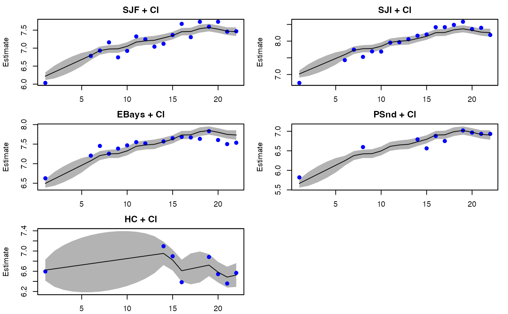
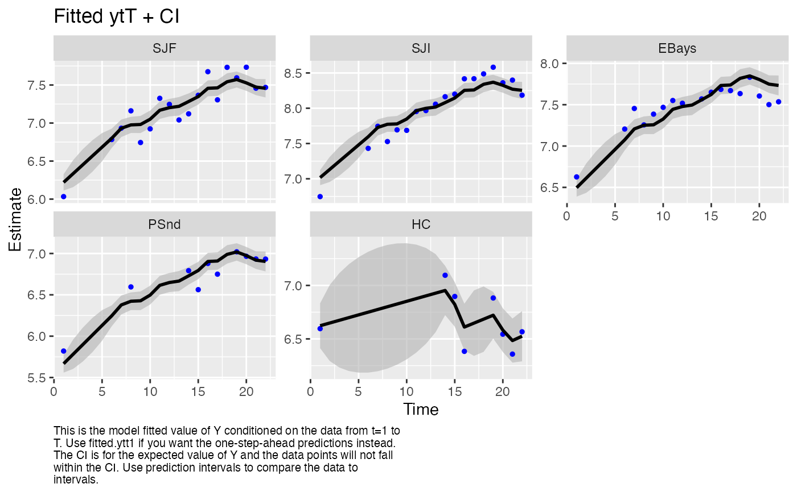

Plot MARSS MLE objects
plot_marssMLE.RdPlots fitted observations and estimated states with confidence intervals using base R graphics (plot) and ggplot2 (autoplot). Diagnostic plots also shown. By default a subset of standard diagnostic plots are plotted. Individual plots can be plotted by passing in plot.type. If an individual plot is made using autoplot(), the ggplot object is returned which can be further manipulated.
Usage
# S3 method for marssMLE
plot(x, plot.type = c(
"fitted.ytT", "fitted.ytt", "fitted.ytt1",
"ytT", "ytt", "ytt1",
"fitted.xtT", "fitted.xtt1",
"xtT", "xtt", "xtt1",
"model.resids.ytt1", "qqplot.model.resids.ytt1", "acf.model.resids.ytt1",
"std.model.resids.ytt1", "qqplot.std.model.resids.ytt1", "acf.std.model.resids.ytt1",
"model.resids.ytT", "qqplot.model.resids.ytT", "acf.model.resids.ytT",
"std.model.resids.ytT", "qqplot.std.model.resids.ytT", "acf.std.model.resids.ytT",
"model.resids.ytt", "qqplot.model.resids.ytt", "acf.model.resids.ytt",
"std.model.resids.ytt", "qqplot.std.model.resids.ytt", "acf.std.model.resids.ytt",
"state.resids.xtT", "qqplot.state.resids.xtT", "acf.state.resids.xtT",
"std.state.resids.xtT", "qqplot.std.state.resids.xtT", "acf.std.state.resids.xtT",
"residuals", "all"),
form=c("marxss", "marss", "dfa"),
standardization = c("Cholesky", "marginal", "Block.Cholesky"),
conf.int=TRUE, conf.level=0.95, decorate=TRUE, pi.int = FALSE,
plot.par = list(), ..., silent = FALSE)
# S3 method for marssMLE
autoplot(x, plot.type = c(
"fitted.ytT", "fitted.ytt", "fitted.ytt1",
"ytT", "ytt", "ytt1",
"fitted.xtT", "fitted.xtt1",
"xtT", "xtt", "xtt1",
"model.resids.ytt1", "qqplot.model.resids.ytt1", "acf.model.resids.ytt1",
"std.model.resids.ytt1", "qqplot.std.model.resids.ytt1", "acf.std.model.resids.ytt1",
"model.resids.ytT", "qqplot.model.resids.ytT", "acf.model.resids.ytT",
"std.model.resids.ytT", "qqplot.std.model.resids.ytT", "acf.std.model.resids.ytT",
"model.resids.ytt", "qqplot.model.resids.ytt", "acf.model.resids.ytt",
"std.model.resids.ytt", "qqplot.std.model.resids.ytt", "acf.std.model.resids.ytt",
"state.resids.xtT", "qqplot.state.resids.xtT", "acf.state.resids.xtT",
"std.state.resids.xtT", "qqplot.std.state.resids.xtT", "acf.std.state.resids.xtT",
"residuals", "all"),
form=c("marxss", "marss", "dfa"),
standardization = c("Cholesky", "marginal", "Block.Cholesky"),
conf.int=TRUE, conf.level=0.95, decorate=TRUE, pi.int = FALSE,
fig.notes = TRUE, plot.par = list(), ..., silent = FALSE)Arguments
- x
A
marssMLEobject.- plot.type
Type of plot. If not passed in, a subset of the standard plots are drawn. See details for plot types.
- standardization
The type of standardization to be used plots, if the user wants to specify a specific standardization. Otherwise Cholesky standardization is used.
- form
Optional. Form of the model. This is normally taken from the form attribute of the MLE object (x), but the user can specify a different form.
- conf.int
TRUE/FALSE. Whether to include a confidence interval.
- pi.int
TRUE/FALSE. Whether to include a prediction interval on the observations plot
- conf.level
Confidence level for CIs.
- decorate
TRUE/FALSE. Add smoothing lines to residuals plots or qqline to qqplots and add data points plus residuals confidence intervals to states and observations plots.
- plot.par
A list of plot parameters to adjust the look of the plots. See details.
- fig.notes
Add notes to the bottom of the plots (only for
autoplot().- silent
No console interaction or output.
- ...
Other arguments, not used.
Value
autoplot() will invisibly return the list of ggplot2 plot objects. Use plts <- autoplot() to obtain that list.
Details
The plot types are as follows:
"fitted.y"This plots the fitted \(\mathbf{y}\), which is the expected value of \(\mathbf{Y}\) conditioned on the data from \(t=1\) to \(t-1\), \(t\) or \(T\). It is \(\mathbf{Z}\mathbf{x}_t^T + \mathbf{a}\). The data are plotted for reference but note that the lines and intervals are for new data not the observed data.
"fitted.x"This plots the fitted x, which is the expected value of \(\mathbf{X}\) conditioned on the data from \(t=1\) to \(t-1\) or \(T\). It is \(B \textrm{E}[\mathbf{X}_{t-1}|\mathbf{y}] + u\). The \(\textrm{E}[\mathbf{X}_t|\mathbf{y}]\) are plotted for reference but note that the lines and intervals are for new \(\mathbf{x}\). This is not the estimated states; these are used for residuals calculations. If you want the state estimates use
xtT(orxtt)."xtT"The estimated states from the Kalman smoother (conditioned on all the data).
"xtt1"The estimated states conditioned on the data up to \(t-1\). Kalman filter output.
"model.resids.ytT","model.resids.ytt1","model.resids.ytt"Model residuals (data minus fitted y).
ytTindicates smoothation residuals,ytt1indicates innovation residuals (the standard state-space residuals), andyttare the residuals conditioned on data up to \(t\)."state.resids.xtT"State smoothation residuals (E(x(t) | xtT(t-1)) minus xtT(t)). The intervals are the CIs for the smoothation residuals not one-step-ahead residuals.
"std"stdin front of any of the above plot names indicates that the plots are for the standardized residuals."qqplot"Visual normality test for the residuals, model or state.
"acf"ACF of the residuals. The only residuals that should be temporally independent are the innovation residuals:
acf.model.residuals.ytt1andacf.std.model.residuals.ytt1. This ACF is a standard residuals diagnostic for state-space models. The other ACF plots will show temporal dependence and are not used for diagnostics."ytT"The expected value of \(\mathbf{Y}\) conditioned on all the data. Use this for estimates of the missing data points. Note for non-missing \(\mathbf{y}\) values, the expected value of \(\mathbf{Y}\) is \(\mathbf{y}\).
"ytt",ytt1The expected value of \(\mathbf{Y}\) conditioned on the data from 1 to \(t\) or \(t-1\).
The plot parameters can be passed in as a list to change the look of the plots. For plot.marssMLE(), the default is plot.par = list(point.pch = 19, point.col = "blue", point.fill = "blue", point.size = 1, line.col = "black", line.size = 1, line.linetype = "solid", ci.col = "grey70", ci.border = NA, ci.lwd = 1, ci.lty = 1). For autoplot.marssMLE, the default is plot.par = list(point.pch = 19, point.col = "blue", point.fill = "blue", point.size = 1, line.col = "black", line.size = 1, line.linetype = "solid", ci.fill = "grey70", ci.col = "grey70", ci.linetype = "solid", ci.linesize = 0, ci.alpha = 0.6).
Examples
data(harborSealWA)
model.list <- list( Z = as.factor(c(1, 1, 1, 1, 2)), R = "diagonal and equal")
fit <- MARSS(t(harborSealWA[, -1]), model = model.list)
#> Success! abstol and log-log tests passed at 20 iterations.
#> Alert: conv.test.slope.tol is 0.5.
#> Test with smaller values (<0.1) to ensure convergence.
#>
#> MARSS fit is
#> Estimation method: kem
#> Convergence test: conv.test.slope.tol = 0.5, abstol = 0.001
#> Estimation converged in 20 iterations.
#> Log-likelihood: 18.89262
#> AIC: -17.78524 AICc: -14.11857
#>
#> Estimate
#> A.SJI 0.79679
#> A.EBays 0.27580
#> A.PSnd -0.55342
#> R.diag 0.02269
#> U.1 0.05889
#> U.2 -0.00466
#> Q.(1,1) 0.00753
#> Q.(2,2) 0.02486
#> x0.1 6.16171
#> x0.2 6.62763
#> Initial states (x0) defined at t=0
#>
#> Standard errors have not been calculated.
#> Use MARSSparamCIs to compute CIs and bias estimates.
#>
plot(fit, plot.type = "fitted.ytT")

#> plot type = fitted.ytT Observations with fitted values
require(ggplot2)
autoplot(fit, plot.type = "fitted.ytT")

if (FALSE) {
# DFA example
dfa <- MARSS(t(harborSealWA[, -1]), model = list(m = 2), form = "dfa")
plot(dfa, plot.type = "xtT")
}